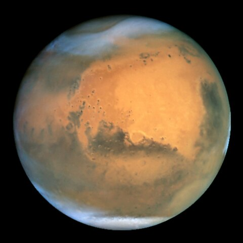

Планети
Надра планет і деяких великих супутників (наприклад, Місяця) перебувають у розплавленому стані. У планет земної групи й супутників внаслідок малої теплопровідності зовнішніх шарів тепловиділення невелике. У планет-гігантів конвекція в їхніх надрах призводить до помітного потоку тепла з надр, що може навіть перевищувати потік, одержуваний ними від Сонця. Венера, Земля й Марс мають атмосфери, що складаються з газів, які виділилися з їхніх надр. У планет-гігантів атмосфери являють собою безпосереднє продовження їхніх надр: ці планети не мають твердої чи рідкої поверхні. Зі збільшенням глибини атмосферні гази поступово переходять у конденсований стан. Відстані планет від Сонця утворюють закономірну послідовність — проміжки між сусідніми орбітами зростають із віддаленням від Сонця. Ці закономірності руху планет у поєднанні з розподілом їх на дві групи за фізичними властивостями вказують на те, що Сонячна система не є випадковим скупченням космічних тіл, а утворилася в єдиному процесі. Тому вивчення кожного з тіл Сонячної системи робить внесок у висвітлення походження всієї Сонячної системи, а разом з тим — і походження, еволюцію та сучасну будову нашої Землі. Завдяки майже круговій формі планетних орбіт і великим відстаням між ними виключена можливість тісних зближень між планетами, коли вони могли б істотно змінювати свій рух внаслідок взаємного тяжіння. Це забезпечує тривале та стійке існування Сонячної системи. Планети обертаються також навколо своїх осей, причому у всіх планет, крім Венери й Урана, обертання відбувається в прямому напрямку, тобто, в тому ж напрямку, що й їх обертання навколо Сонця. Надзвичайно повільне обертання Венери відбувається в зворотному напрямку, а Уран обертається, ніби лежачи на боці. Усі 4 планети-гіганти, крім великих супутників, мають безліч дрібних, що утворюють кільця.
В сонячній системі відомо вісім планет:
Меркурій

Меркурій є найближчою до Сонця (0,4 а. о.) й найменшою планетою системи (0,055 маси Землі). У Меркурія немає супутників, а його найпомітнішими, після ударних кратерів, деталями рельєфу є численні криволінійні уступи довжиною до сотень кілометрів і висотою до 3 км. Ймовірно, вони виникли при стисканні планети внаслідок поступового остигання її надр.
Меркурій має вкрай розріджену атмосферу. Вона складається з атомів, «вибитих» із поверхні планети сонячним вітром. Велике залізне ядро Меркурія та його тонка кора ще не отримали належного пояснення. Є гіпотеза, яка припускає, що зовнішні шари планети, складені з легких елементів, зірвало внаслідок гігантського зіткнення, яке зменшило розміри
планети[52], а також запобігло повному поглинанню Меркурія молодим Сонцем.
Венера

Венера близька за розміром і масою до Землі (її маса становить 0,815 земної). Як і Земля, вона має потужну атмосферу та товсту силікатну оболонку навколо залізного ядра. На поверхні Венери є яскраві ознаки колишньої геологічної активності, в першу чергу вулканізму. Води в складі Венери майже немає, а її атмосфера в дев'яносто разів щільніша за земну. Це найгарячіша планета: температура її поверхні перевищує 400 °C. Причиною цього є парниковий ефект у щільній, багатій на вуглекислий газ атмосфері[53]. Надійних ознак сучасної ендогенної геологічної активності на Венері не виявлено[джерело?], але, оскільки у неї немає магнітного поля, яке запобігло б виснаженню її наявної атмосфери, це дозволяє припустити, що її атмосфера регулярно поповнюється вулканічними виверженнями. Природних супутників у Венери немає.
Земля
Земля є найбільшою та найщільнішою серед внутрішніх планет. У Землі є один природний супутник — Місяць, це єдиний великий супутник планет земної групи. Серед планет земної групи Земля є унікальною (насамперед — гідросферою). Атмосфера Землі радикально відрізняється від атмосфер інших планет — вона містить вільний кисень. Питання про наявність життя де-небудь, крім Землі, залишається відкритим.
Марс
Марс менший за Землю та Венеру (0,107 маси Землі). Він має атмосферу, що складається переважно з вуглекислого газу, з поверхневим тиском 6,1 мбар (0,6 % від земного). На його поверхні є вулкани, найбільший із яких, Олімп, перевищує розмірами всі земні вулкани, досягаючи висоти 21,2 км. Рифтові западини (долини Марінера) свідчать про колишню тектонічну активність. Сучасної тектонічної та вулканічної активності на Марсі не зареєстровано, але, за деякими оцінками, Олімп востаннє вивергався не більше 2 млн років тому. Червоний колір поверхні Марса зумовлений великою кількістю оксиду заліза в його ґрунті. Планета має два супутники — Фобос і Деймос. Припускається, що вони являють собою захоплені астероїди.
Юпітер

Юпітер має масу, в 318 разів більшу від земної, і є в 2,5 рази масивнішим від усіх інших планет разом узятих. Він складається здебільшого з водню і гелію. Висока внутрішня температура Юпітера викликає появу численних напівпостійних вихрових структур в його атмосфері, таких як смуги хмар і Велика червона пляма. Юпітер має 79 супутників. Чотири найбільших — Ганімед, Каллісто, Іо та Європа — подібні до планет земної групи ендогенною активністю, зокрема тектонічною, а Іо — навіть вулканічною. Ганімед, найбільший супутник в Сонячній системі, за розмірами перевищує Меркурій.
Сатурн
Сатурн, відомий своєю системою кілець, має структуру атмосфери і магнітосфери, дещо подібну до відповідних структур Юпітера. Хоча об'єм Сатурна дорівнює 60 % об'єму Юпітера, маса (95 мас Землі) — менша від третини маси Юпітера; таким чином, Сатурн — найменш щільна планета Сонячної системи (його середня густина менша за густину води). Сатурн має 82 підтверджених супутники; два з них — Титан і Енцелад — проявляють ознаки геологічної активності. Ця активність, однак, не подібна до земної, оскільки значною мірою обумовлена активністю льоду. Титан, який за розмірами більший за Меркурій, — єдиний супутник в Сонячній системі, що має атмосферу.
Уран
Уран з масою, в 14 разів більшою, ніж у Землі, є найлегшою із зовнішніх планет. Унікальним серед інших планет його робить те, що він обертається «лежачи на боці»: нахил осі його обертання до площини екліптики дорівнює приблизно 98°. Якщо інші планети можна порівняти з дзиґою, що обертається, то Уран більше схожий на кульку, яка котиться. Він має набагато холодніше ядро, ніж інші газові гіганти, і випромінює в космос дуже мало тепла. Відкрито 27 супутників Урана; найбільші з них — Титанія, Оберон, Умбріель, Аріель і Міранда.
Нептун
Нептун, хоча і дещо менший від Урана, але масивніший (17 мас Землі) і тому щільніший. Він випромінює більше внутрішнього тепла, але не так багато, як Юпітер чи Сатурн. Нептун має 14 відомих супутників. Найбільший з них — Тритон, є геологічно активним, з гейзерами рідкого азоту. Тритон — єдиний великий супутник, що рухається в зворотному напрямку. Також Нептун супроводжують астероїди, що називаються троянцями Нептуна, які перебувають з ним в резонансі 1:1.